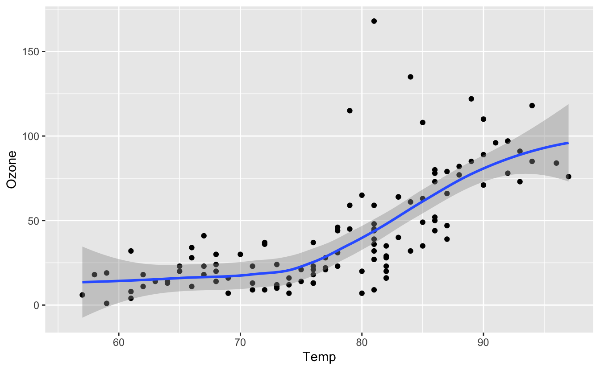

2 R et RStudio : les bases
Avant de commencer à explorer des données dans R, il y a plusieurs concepts clés qu’il faut comprendre premier lieu :
- Que sont R et RStudio ?
- Comment s’y prend-on pour coder dans R ?
- Que sont les “packages” ?
Même si vous pensez être déjà à l’aise avec ces concepts, lisez attentivement ce chapitre et faites les exercices demandés. Cela vous rafraîchira probablement la mémoire, et il n’est pas impossible que vous appreniez une chose ou deux au passage. Une bonne maîtrise des éléments présentés dans ce chapitre est un effet nécessaire pour aborder sereinement les chapitres suivants, à commencer par le chapitre 3, qui présente quelques jeux de données que nous explorerons en détail dans cet ouvrage.
Ce chapitre est en grande partie basé sur les 3 ressources suivantes que je vous encourage à consulter si vous souhaitez obtenir plus de détails :
- L’ouvrage intitulé ModernDive, de Chester Ismay et Albert Y. Kim. Une bonne partie de cet ouvrage est très largement inspirée de cet ouvrage. C’est en anglais, mais c’est un très bon texte d’introduction aux statistiques sous R et RStudio.
- L’ouvrage intitulé Getting used to R, RStudio, and R Markdown de Chester Ismay, comprend des podcasts (en anglais toujours) que vous pouvez suivre en apprenant.
- Les tutoriels en ligne de DataCamp. DataCamp est une plateforme de e-learning accessible depuis n’importe quel navigateur internet dont la priorité est l’enseignement des “data sciences”. Leurs tutoriels vous aideront à apprendre certains des concepts de développés dans ce livre. Avant d’aller plus loin, rendez-vous sur le site de DataCamp et créez vous un compte gratuit.
2.1 Que sont R et RStudio
Pour l’ensemble de ces TP, j’attends de vous que vous utilisez R via RStudio. Les utilisateurs novices confondent souvent les deux. Pour tenter une analogie simple :
- R est le moteur d’une voiture
- RStudio est l’habitacle, le tableau de bord, les pédales
Si vous n’avez pas de moteur, vous n’irez nulle part. En revanche, un moteur sans tableau de bord est difficile à manœuvrer. Il est en effet beaucoup plus simple de faire avancer une voiture depuis l’habitacle, plutôt qu’en actionnant à la main les cables et leviers du moteur.
En l’occurence, R est un langage de programmation capable de produire des graphiques et de réaliser des analyses statistiques, des plus simples au plus complexes. RStudio est un “emballage” qui rend l’utilisation de R plus aisée. RStudio est ce qu’on appelle un IDE : Itegrated Development Environment. On peut utiliser R sans RStudio, mais c’est nettement plus compliqué, nettement moins pratique.
2.1.1 Installation de R et RStudio
Si vous travaillez exclusivement sur les ordinateurs de l’Université, vous pouvez passer cette section. Si vous souhaitez utiliser R et RStudio sur votre ordinateur personnel, alors suivez le guide !
Avant tout, vous devez télécharger et installer R et RStudio, dans cet ordre :
- Note : vous devez installer ce logiciel en premier
- Cliquez sur le lien de telechargement qui correspond à votre système d’exploitation, puis, sur “base”, et suivez les instructions
- Cliquez sur “Download RStudio Desktop”
- Choisissez la version gratuite et cliquez sur le lien de télechargement qui correspond à votre système d’exploitation.
Pour plus de détails sur la façon de procéder, vous pouvez consulter cette vidéo sur le site de DataCamp. Pour accéder à la vidéo, il est possible que vous deviez vous identifier avec le compte (gratuit) que vous avez créé un peu plus tôt.
2.1.2 Utiliser R depuis RStudio
Puisqu’il est beaucoup plus facile d’utiliser Rstudio pour interagir avec R, nous utiliserons exclusivement l’interface de RStudio. Après l’installation des 2 logiciels, vous disposez de 2 nouveaux logiciels sur votre ordinateur. RStudio ne peut fonctionner sans R, mais nous travaillerons exclusivement dans RStudio :
| R: Ne pas ouvrir ceci | RStudio: ouvrir ça ! |
|---|---|
 |
 |
À l’université, vous trouverez RStudio dans le menu Windows. Quand vous ouvrez RStudio pour la première fois, vous devriez obtenir une fenêtre qui ressemble à ceci :

Regardez cette vidéo DataCamp pour découvrir les différents panneaux de l’application, en particulier la Console dans laquelle nous executerons très bientôt du code R
2.2 Comment exécuter du code R ?
Maintenant que vous avez installé R et RStudio, vous vous demandez probablement comment on s’en sert… La première chose à noter est que, contrairement à d’autres logiciels comme Excel, STATA ou SAS qui fournissent des interfaces où tout se fait en cliquant avec sa souris, R est un langage interprété, ce qui signifie que vous devez taper des commandes R, écrites en code R. C’est-à-dire que vous devez programmer en R (j’utilise les termes “coder” et “programmer” de manière interchangeable dans ce livre).
Il n’est pas nécessaire d’être un programmeur pour utiliser R, néamnoins, il est nécessaire de programmer ! Il existe en effet un ensemble de concepts de programmation de base que les utilisateurs R doivent comprendre et maîtriser. Par conséquent, bien que ce livre ne soit pas un livre sur la programmation, vous en apprendrez juste assez sur ces concepts de programmation de base pour explorer et analyser efficacement des données.
2.2.1 La console
La façon la plus simle d’interagir avec RStudio (mais pas du tout la meilleure !) consiste à taper directement des commandes que R pourra comprendre dans la Console.
Cliquez dans la console (après le symbole >) et tapez ceci, sans oublier de valider en tapant sur la touche Entrée :
[1] 11Félicitations, vous venez de taper votre première instruction R : vous savez maintenant faire des additions !
2.2.2 Le répertoire de travail
La première commande que vous devriez connaître quand vous travaillez dans R ou RStudio est la suivante :
Si vous tapez cette commande dans la console, RStudio doit vous afficher un emplacement sur votre ordinateur. Cet emplacement est appelé “Répertoire de travail”, ou “Working Directory” en anglais (getwd() est l’abbréviation de “Get Working Directory”).
Ce répertoire de travail est important : c’est là que seront stockés les tableaux et graphiques que vous déciderez de sauvegarder. C’est là aussi que vous sauvegarderez vos scripts (voir plus bas) qui vous permettront de garder la trace de votre travail et de le reprendre là où vous l’aviez laissé la dernière fois. Enfin, lorsque vous souhaiterez importer des tableaux de données contenus dans des fichiers externes (par exemple, des fichiers Excel), c’est également dans ce répertoire que R tentera de trouver vos données.
Avant d’aller plus loin je vous conseille donc vivement de :
- Créer un nouveau dossier intitulé “Rstats” sur votre espace personnel (généralement, sur le disque “W:” des ordinateurs de l’Université)
- Indiquez à RStudio que vous souhaitez travailler dans ce nouveau répertoire de travail. Pour cela vous avez 3 solutions au choix :
- Dans RStudio, cliquez dans le menu “Session > Set Working Directory > Choose Directory…” puis naviguez jusqu’au dossier que vous venez de créer
- Dans le panneau “Files”, naviguez jusqu’au dossier “Rstats” que vous venez de créer, puis cliquez sur le bouton “More > Set As Working Directory”
- En ligne de commande, dans la console, utilisez la fonction
setwd()pour spécifier le chemin de votre nouveau dossier, par exemple :
Il ne vous reste plus qu’à vérifier que le changement a bien été pris en compte en tapant à nouveau getwd() dans la console. Attention, vous devez vous assurer d’être dans le bon répertoire de travail à chaque nouvelle session !
2.2.3 Les scripts
Taper du code directement dans la console est probablement la pire façon de travailler dans RStudio. Cela est parfois utile pour faire un rapide calcul, ou pour vérifier qu’une commande fonctionne correctement. Mais la plupart du temps, vous devriez taper vos commandes dans un script.
Un script est un fichier au format “texte brut” (cela signifie qu’il n’y a pas de mise en forme et que ce fichier peut-être ouvert par n’importe quel éditeur de texte, y compris les plus simples comme le bloc notes de Windows), dans lequel vous pouvez taper :
- des instructions qui seront comprises par R comme si vous les tapiez directement dans la console
- des lignes de commentaires, qui doivent obligatoirement commencer par le symbole
#.
Les avantages de travailler dans un script sont nombreux :
- Vous pouvez sauvegarder votre script à tout moment (vous devriez prendre l’habitude de le sauvegarder très régulièrement). Vous gardez ainsi la trace de toutes les commandes que vous avez tapées.
- Vous pouvez aisément partager votre script pour collaborer avec vos collègues de promo et enseignants.
- Vous pouvez documenter votre démarche et les différentes étapes de vos analyses. Vous devez ajouter autant de commentaires que possible. Cela permettra à vos collaborateurs de comprendre ce que vous avez fait. Et cela vous permettra de comprendre ce que vous avez fait il y a 6 mois quand vous vous re-plongerez dans vos analyses dans quelques temps. Si votre démarche vous paraît cohérente maintenant, il n’est en effet pas garanti que vous rappellerez de chaque détail dans 6 mois ou 6 ans.
- Un script bien structuré et clair permet de rendre vos analyses répétables. Si vous passez 15 heures à analyser un tableau de données précis, il vous suffira de quelques secondes pour analyser un nouveau jeu de données similaire : vous n’aurez que quelques lignes à modifier dans votre script original pour l’appliquer à de nouvelles données.
Vous pouvez créer un script en cliquant dans le menu “File > New File > R Script”. Un nouveau panneau s’ouvre dans l’application. Pensez à sauvegarder immédiatement votre nouveau script. Il faut pour cela lui donner un nom. Vous noterez que par défaut, RStudio propose d’enregistrer votre script dans votre répertoire de travail.
À partir de maintenant, vous ne devriez plus taper de commande directement dans la console. Tapez systématiquement vos commandes dans un script et sauvegardez-le régulièrement.
Pour exécuter les commandes du script dans la console, il suffit de placer le curseur sur la ligne contenant la commande et de presser les touches ctrl + enter (ou command + enter sous macOS). Si un message d’erreur s’affiche dans la console, c’est que votre instruction était erronée. Modifiez la directement dans votre script et pressez à nouveau les touches ctrl + enter (ou command + enter sous macOS) pour tenter à nouveau votre chance. Idéalement, votre script ne devrait contenir que des commandes qui fonctionnent et des commentaires expliquant à quoi servent ces commandes.
À la fin de chaque séance de TEA, vous devrez déposer sur l’ENT le script que vous avez créé durant la séance. Ce script devra porter votre nom de famille et se terminer par l’extension .R. Ainsi, si Jean-Claude Van Damme faisait des statistiques, il devrait déposer sur l’ENT un fichier intitulé VanDamme.R à la fin de chaque séance de TEA.
Ci-dessous, un exemple de script
# Penser à installer le package ggplot2 si besoin
# install.packages("ggplot2")
# Chargement du package
library(ggplot2)
# Mise en méoire des données de qualité de l'air à New-York de mai à septembre 1973
data(airquality)
# Affichage des premières lignes du tableau de données
head(airquality)
# Quelle est la structure de ce tableau ?
str(airquality)
# Réalisation d'un graphique présentant la relation entre la concentration en ozone atmosphérique en ppb et la température en degrés Farenheit
ggplot(data = airquality, mapping = aes(x = Temp, y = Ozone)) +
geom_point() +
geom_smooth(method = "loess")
# On constate une augmentation importante de la concentration d'ozone pour des températures supérieures à 75ºFMême si vous ne comprenez pas encore les commandes qui figurent dans ce script (ça viendra !), voici ce que vous devez en retenir :
- Le script contient plus de lignes de commentaires que de commandes R
- Chaque étape de l’analyse est décrite en détail
- On peut ajouter des commentaires afin de décrire les résultats
- Seules les commandes pertinentes et qui fonctionnent ont été conservées dans ce script
- Chaque ligne de commentaire commence par
#. Il est ainsi possible de conserver certaines commandes R dans le script, “pour mémoire”, sans pour autant qu’elle ne soient exécutées. C’est le cas pour la ligne# install.packages("ggplot2").
Si j’éxécute ce script dans la console de RStudio (en sélectionnant toutes les lignes et en pressant les touches ctrl+enter ou command+enter sous macOS), voilà ce qui est produit :
Ozone Solar.R Wind Temp Month Day
1 41 190 7.4 67 5 1
2 36 118 8.0 72 5 2
3 12 149 12.6 74 5 3
4 18 313 11.5 62 5 4
5 NA NA 14.3 56 5 5
6 28 NA 14.9 66 5 6'data.frame': 153 obs. of 6 variables:
$ Ozone : int 41 36 12 18 NA 28 23 19 8 NA ...
$ Solar.R: int 190 118 149 313 NA NA 299 99 19 194 ...
$ Wind : num 7.4 8 12.6 11.5 14.3 14.9 8.6 13.8 20.1 8.6 ...
$ Temp : int 67 72 74 62 56 66 65 59 61 69 ...
$ Month : int 5 5 5 5 5 5 5 5 5 5 ...
$ Day : int 1 2 3 4 5 6 7 8 9 10 ...
2.2.4 Concepts de base en programmation et terminologie
Pour vous présenter les concepts de base et la terminologie de la programmation dont nous aurons besoin dans R, vous allez suivre les tutoriels en ligne suivants, sur le site de DataCamp. Pour chacun des tutoriels, j’indique une liste des concepts de programmation couverts. Notez que dans ce livre, nous utiliserons une police différente pour distinguer le texte normal et les commandes-informatiques.
Il est important de noter que, bien que ces tutoriels sont d’excellentes introductions, une seule lecture est insuffisante pour un apprentissage en profondeur et une rétention à long terme. Les outils ultimes pour l’apprentissage et la rétention à long terme sont “l’apprentissage par la pratique” et “la répétition”. Outre les exercices demandés dans DataCamp, que vous devez effectuer directement dans votre navigateur, je vous encourage donc à multiplier les essais, directement dans la console de RStudio, ou, de préférence, dans un script que vous annoterez, pour vous assurer que vous avez bien compris chaque partie.
2.2.4.1 Objets, types, vecteurs, facteurs et tableaux de données
Dans le cours d’introduction à R sur DataCamp, suivez les chapitres suivants. Au fur et à mesure de votre travail, notez les termes importants et ce à quoi ils font référence.
- Chapitre 1 : introduction
- La console : l’endroit où vous tapez des commandes
- Les objets : où les valeurs sont stockées, comment assigner des valeurs à des objets
- Les types de données : entiers, doubles/numériques, charactères et logiques
- Chapitre 2 : vecteurs
- Les vecteurs : des collections de valeurs du même type.
- Chapitre 4 : les facteurs
- Des données catégorielles (et non pas numériques) représentés dans R sous forme de
factors.
- Des données catégorielles (et non pas numériques) représentés dans R sous forme de
- Chapitre 5 : les jeux de données ou
data.frame- Les
data.frames sont similaires aux feuilles de calcul rectangulaires que l’on peut produire dans un tableur. Dans R, ce sont des objets rectangulaires (des tableaux !) contenant des jeux de données : les lignes correspondent aux observations et les colonnes aux variables décrivant les observations. La plupart du temps, c’est le format de données que nous utiliserons. Plus de détails dans le chapitre 3.
- Les
Avant de passer à la suite, il nous reste 2 grandes notions à découvrir dans le domaine du code et de la syntaxe afin de pouvoir travailler efficacement dans R : les opérateurs de comparaison d’une part, et les fonctions d’autre part.
2.2.4.2 Opérateurs de comparaison
Comme leur nom l’indique, ils permettent de comparer des valeurs ou des objets. Les principaux opérateurs de comparaison sont :
==: égale à!=: différent de>: supérieur à<: inférieur à>=: supérieur ou égal à<=: inférieur ou égal à
Ainsi, on peut tester si 3 est égal à 5 :
[1] FALSELa réponse est bien entendu FALSE. Est-ce que 3 est inférieur à 5 ?
[1] TRUELa réponse est maintenant TRUE. Lorsque l’on utilise un opérateur de comparaison, la réponse est toujours soit vrai (TRUE), soit faux (FALSE).
Il est aussi possible de comparer des chaînes de charactères :
[1] FALSE[1] TRUEManifestement, “Bonjour” est supérieur ou égal à “Au revoir”. En fait, R utilise l’ordre alphabétique pour comparer les chaînes de caractères. Puisque dans l’alphabet, le “B” de “Bonjour” arrive après le “A” de “Au revoir”, pour R, “Bonjour” est bien supérieur à “Au revoir”.
Il est également possible d’utiliser ces opérateurs pour comparer un chiffre et un vecteur :
[1] TRUE FALSE TRUE FALSE TRUE FALSE FALSE FALSEIci, l’opérateur nous permet d’identifier quels éléments du vecteur taille_pop1 sont supérieurs à 80. Il s’agit des éléments placés en première, troisième et cinquième position.
Il est aussi possible de comparer 2 vecteurs qui contiennent le même nombre d’éléments :
[1] FALSE TRUE TRUE FALSE TRUE FALSE TRUE FALSELes comparaisons sont ici faites élément par élément. Ainsi, les observations 2, 3, 5 et 7 du vecteur tailles_pop1 sont supérieures aux observations 2, 3, 5 et 7 du vecteur tailles_pop2 respectivement.
Ces vecteurs de vrais/faux sont très utiles car ils peuvent permettre de compter le nombre d’éléments répondant à une certains condition :
[1] 4Lorsque l’on effectue une opération arithmétique (comme le calcul d’une somme ou d’une moyenne) sur un vecteur de vrais/faux, les TRUE sont remplacés par 1 et les FALSE par 0. La somme nous indique donc le nombre de vrais dans un vecteur de vrais/faux, et la moyenne nous indique la proportion de vrais :
[1] 0.5Note : Attention, si les vecteurs comparés n’ont pas la même taille, un message d’avertissement est affiché :
[1] 112 28 86 14 154 73 63 48[1] 43 56 92Warning in tailles_pop3 > tailles_pop1: la taille d'un objet plus long n'est pas
multiple de la taille d'un objet plus court[1] FALSE TRUE TRUE TRUE FALSE TRUE FALSE TRUEDans un cas comme celui là, R va recycler l’objet le plus court, ici tailles_pop3 pour qu’une comparaison puisse être faite avec chaque élément de l’objet le plus long (ici, tailles_pop1). Ainsi, 43 est comparé à 112, 56 est comparé à 28 et 92 est comparé à 86. Puisque tailles_pop3 ne contient plus d’éléments, ils sont recyclés, dans le même ordre : 43 est comparé à 14, 56 est comparé à 154, et ainsi de suite jusqu’à ce que tous les éléments de tailles_pop1 aient été passés en revue.
Ce type de recyclage est très risqué car il est difficile de savoir ce qui a été comparé avec quoi. En travaillant avec des tableaux plutôt qu’avec des vecteurs, le problème est généralement évité puisque toutes les colonnes d’un data.frame contiennent le même nombre d’éléments.
Dernière chose concernant les opérateurs de comparaison : la question des données manquantes. Dans R les données manquantes sont symbolisées par cette notation : NA, abréviation de “Not Available”. Le symbole NaN (comme “Not a Number”) est parfois aussi observé lorsque des opérations ont conduit à des indéterminations. Mais c’est plus rare et la plupart du temps, les NaNs peuvent être traités comme les NAs. L’un des problèmes des données manquantes, est qu’il est nécessaire de prendre des précautions pour réaliser des comparaison les impliquants :
[1] NAOn s’attend logiquement à ce que 3 ne soit pas considéré comme égal à NA, et donc, on s’attend à obtenir FALSE. Pourtant, le résultat est NA. La comparaison d’un élément quelconque à une donnée manquante fournit toujours une donnée manquante : la comparaison ne peut pas se faire, R n’a donc rien à retourner. C’est également le cas aussi lorsque l’on compare deux valeurs manquantes :
[1] NAC’est en fait assez logique. Imaginons que j’ignore l’âge de Pierre et l’âge de Marie. Il n’y a aucune raison pour que leur âge soit le même, mais il est tout à fait possible qu’il le soit. C’est impossible à déterminer :
[1] NAMais alors comment faire pour savoir si une valeur est manquante puisqu’on ne peut pas utiliser les opérateurs de comparaison ? On utilise la fonction is.na() :
[1] TRUE[1] FALSE FALSE FALSED’une façon générale, le point d’exclamation permet de signifier à R que nous souhaitons obtenir le contraire d’une expression :
[1] FALSE[1] TRUE TRUE TRUECette fonction nous sera très utile plus tard pour éliminer toutes les lignes d’un tableau contenant des valeurs manquantes.
2.2.4.3 L’utilisation des fonctions
Dans R, les fonctions sont des objets particuliers qui permettent d’effectuer des tâches très variées. Du calcul d’une moyenne à la création d’un graphique, en passant par la réalisation d’analyses statistiques complexes ou simplement l’affichage du chemin du répertoire de travail, tout, dans R, repose sur l’utilisation de fonctions. Vous en avez déjà vu un certain nombre :
| Fonction | Pour quoi faire ? |
|---|---|
c() |
Créer des vecteurs |
class() |
Afficher ou modifier la classe d’un objet |
factor() |
Créer des facteurs |
getwd() |
Afficher le chemin du répertoire de travail |
head() |
Afficher les premiers éléments d’un objet |
is.na() |
Tester si un objet contient des valeurs manquantes |
mean() |
Calculer une moyenne |
names() |
Afficher ou modifier le nom des éléments d’un vecteur |
order() |
Ordonner les éléments d’un objet |
setwd() |
Modifier le chemin du répertoire de travail |
subset() |
Extraire une partie des éléments d’un objet |
sum() |
Calculer une somme |
tail() |
Afficher les derniers éléments d’un objet |
Cette liste va très rapidement s’allonger au fil des séances. Je vous conseille donc vivement de tenir à jour une liste des fonctions décrites, avec une explication de leur fonctionnement et éventuellement un exemple de syntaxe.
Certaines fonction ont besoin d’arguments (par exemple, la fonction factor()), d’autres peuvent s’en passer (par exemple, la fonction getwd()). Pour apprendre comment utiliser une fonction particulière, pour découvrir quels sont ses arguments possibles, quelle est leur rôle et leur intérêt, la meilleure solution est de consulter l’aide de cette fonction. Il suffit pour cela de taper un ? suivi du nom de la fonction :
Toutes les fonctions et jeux de données disponibles dans R disposent d’un fichier d’aide similaire. Cela peut faire un peu peur au premier abord (tout est en anglais !), mais ces fichiers d’aide ont l’avantage d’être très complets, de fournir des exemples d’utilisation, et ils sont tous construits sur le même modèle. Vous avez donc tout intérêt à vous familiariser avec eux. vous devriez d’ailleurs prendre l’habitude de consulter l’aide de chaque fonction qui vous pose un problème. Par exemple, le logarithme (en base 10) de 100 devrait faire 2, car 100 est égal à 10^2. Pourtant :
[1] 4.60517Que se passe-t’il ? Pour le savoir, il faut consulter l’aide de la fonction log :
Ce fichier d’aide nous apprend que par défaut, la syntaxe de la fonction log() est la suivante :
Par défaut, la base du logarithme est fixée à exp(1). Nous avons donc calculé un logarithme népérien (en base e). Cette fonction prend donc 2 arguments :
xne possède pas de valeur par défaut : il nous faut obligatoirement fournir quelque chose (la rubrique “Argument” du fichier d’aide nous indique quexdoit être un vecteur numérique ou complexe) afin que la fonction puisse calculer un logarithmebasepossède un argument par défaut. Si nous ne spécifions pas nous même la valeur debase, elle sera fixée à sa valeur par défaut, c’est à direexp(1).
Pour calculer le logarithme en base 10 de 100, il faut donc taper, au choix, l’une de ces 3 expressions :
[1] 2[1] 2[1] 2Le nom des arguments d’une fonction peut être omis tant que ces arguments sont indiqués dans l’ordre attendu par la fonction (cet ordre est celui qui est précisé à la rubrique “Usage” du fichier d’aide de la fonction). Il est possible de modifier l’ordre des arguments d’une fonction, mais il faut alors être parfaitement explicite et utiliser les noms des arguments tels que définis dans le fichier d’aide.
Ainsi, pour calculer le logarithme en base 10 de 100, on ne peut pas taper :
[1] 0.5car cela revient à calculer le logarithme en base 100 de 10. On peut en revanche taper :
[1] 22.3 Les packages additionels
Une source de confusion importante pour les nouveaux utilisateurs de R est la notion de package. Les packages étendent les fonctionnalités de R en fournissant des fonctions, des données et de la documentation supplémentaires et peuvent être téléchargés gratuitement sur Internet. Ils sont écrits par une communauté mondiale d’utilisateurs de R. Par exemple, parmi plus de 13000 packages disponibles à l’heure actuelle, nous utiliseront fréquemment :
- Le package
ggplot2pour la visualisation des données dans le chapitre 4 - Le package
dplyrpour les manipuler des tableaux données dans le chapitre 6
Une bonne analogie pour les packages R : ils sont comme les apps que vous téléchargez sur un téléphone portable :
| R : Un nouveau téléphone | Packages: Apps qu’on peut telécharger |
|---|---|
 |
 |
R est comme un nouveau téléphone mobile. Il est capable de faire certaines choses lorsque vous l’utilisez pour la première fois, mais il ne sait pas tout faire. Les packages R sont comme les apps que vous pouvez télécharger dans l’App Store et Google Play. Pour utiliser un package, comme pour utiliser Instagram, vous devez :
- Le télécharger et l’installer. Vous ne le faites qu’une fois.
- Le charger (en d’autres termes, l’ouvrir) en utilisant la commande
library ().
Donc, tout comme vous ne pouvez commencer à partager des photos avec vos amis sur Instagram que si vous installez d’abord l’application et que vous l’ouvrez, vous ne pouvez accéder aux données et fonctions d’un package R que si vous installez d’abord le package et le chargez avec la fonction library(). Passons en revue ces 2 étapes.
2.3.1 Installation d’un package
Il y a deux façons d’installer un package. Par example, pour installer le package ggplot2 :
- Le plus simple : Dans le panneau “File” de Rstudio :
- Cliquez sur l’onglet “Packages”
- Cliquez sur “Install”
- Tapez le nom du package dans le champ “Packages (separate multiple with space or comma):” Pour notre exemple, tapez
ggplot2 - Cliquez “Install”
- Métode alternative : Dans la console, tapez
install.packages("ggplot2")(vous devez inclure les guillemets).
En procédant de l’une ou l’autre façon, installez également les packages suivants : tidyverse et nycflights13.
Note : un package doit être installé une fois seulement, sauf si une version plus récente est disponible et que vous souhaitez mettre à jour ce package.
2.3.2 Charger un package en mémoire
Après avoir installé un package, vous pouvez le charger en utilisant la fonction library(). Par exemple, pour charger ggplot2 et dplyr tapez ceci dans la console :
Note : Vous devez charger à nouveau chaque package que vous souhaitez utiliser à chaque fois que vous ouvrez une nouvelle session de travail dans RStudio. Ça peut être un peu pénible et c’est une source d’erreur fréquente pour les débutants. Quand vous vouyez un message d’erreur commençant par :
Error: could not find function...rappelez-vous que c’est probablement parce que vous tentez d’utiliser une fonction qui fait partie d’un package que vous n’avez pas chargé. Pour corriger l’erreur, il suffit donc de charger le package approprié avec la commande library().
2.4 Exercices
Créez un nouveau script que vous nommerez VotreNomDeFamille.R. Vous prendrez soin d’ajouter autant de commentaires que nécessaire dans votre script afin de le structurer correctement.
- Téléchargez (si besoin) et chagez le package
ggplot2 - Chargez le jeu de données
diamondsgrâce à la commandedata(diamonds) - Déterminer le nombre de lignes et de colonnes de ce tableau nommé
diamonds - Créez un nouveau tableau que vous nommerez
diamants_chersqui contiendra uniquement les informations des diamants dont le prix est supérieur ou égal à $15000 - Combien de diamants coûtent $15000 ou plus ?
- Cela représente quelle proportion du jeu de données de départ ?
- Triez ce tableau par ordre de prix décroissant et affichez les informations des 20 diamants les plus chers.